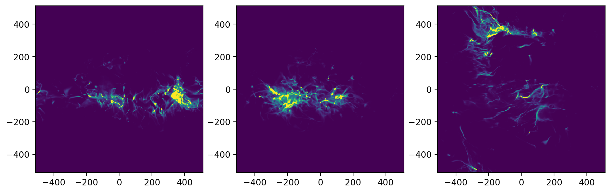

Extracting subset data#
import matplotlib.pyplot as plt
from matplotlib.colors import LogNorm
from matplotlib import gridspec
import numpy as np
import yt #https://yt-project.org/
Load the simulation model#
# add path to astro_tigress module
# this can also be done using PYTHONPATH environment variable
import sys
sys.path.insert(0,'../')
import astro_tigress
# Need to set the master directory where the data is stored
dir_master = "../data/"
# name of the simulation model
model_id = "R8_2pc"
model = astro_tigress.Model(model_id,dir_master) #reading the model information
print("Snapshots and contained data sets:")
for ivtk in model.ivtks:
print("ivtk={:d}, t={:.1f} Myr, datasets={}".format(ivtk, ivtk*model.dt_Myr, model.data_sets[ivtk]))
Snapshots and contained data sets:
ivtk=290, t=283.6 Myr, datasets=['CO_lines', 'MHD', 'chem']
Read and analyse the chemistry output#
Now, we want to look into the detailed chemistry data of the simulations. This is the chemistry post-processing output from the Athena++ HDF5 output file.
First, we select a snapshot (identified by its ivtk number) and the type of dataset we want to look into (“chem” in this case). Then we need to load the data. Because the data files are large, it can take a while to load.
Download the data if you haven’t done it yet
You can navigate the folder and only download selected snapshots.
You will always need
histroyandinputfiles. You can run the following.
model.download(dataset=["history","input"])
model = astro_tigress.Model(model_id,dir_master) # need to reload the class
#load the chemistry data set for the snapshot ivtk=300
model.load(290, dataset="chem")
You can print out the information of all the fields available using the code below (I commented it because the output is too long).
model.chem.ytds.field_info
{('athena_pp', 'C+'): On-Disk Field ('athena_pp', 'C+'): (units: ''), ('athena_pp', 'CHx'): On-Disk Field ('athena_pp', 'CHx'): (units: ''), ('athena_pp', 'CO'): On-Disk Field ('athena_pp', 'CO'): (units: ''), ('athena_pp', 'E'): On-Disk Field ('athena_pp', 'E'): (units: ''), ('athena_pp', 'H+'): On-Disk Field ('athena_pp', 'H+'): (units: ''), ('athena_pp', 'H2'): On-Disk Field ('athena_pp', 'H2'): (units: ''), ('athena_pp', 'H2+'): On-Disk Field ('athena_pp', 'H2+'): (units: ''), ('athena_pp', 'H3+'): On-Disk Field ('athena_pp', 'H3+'): (units: ''), ('athena_pp', 'HCO+'): On-Disk Field ('athena_pp', 'HCO+'): (units: ''), ('athena_pp', 'He+'): On-Disk Field ('athena_pp', 'He+'): (units: ''), ('athena_pp', 'O+'): On-Disk Field ('athena_pp', 'O+'): (units: ''), ('athena_pp', 'OHx'): On-Disk Field ('athena_pp', 'OHx'): (units: ''), ('athena_pp', 'Si+'): On-Disk Field ('athena_pp', 'Si+'): (units: ''), ('athena_pp', 'col_avg0'): On-Disk Field ('athena_pp', 'col_avg0'): (units: ''), ('athena_pp', 'col_avg1'): On-Disk Field ('athena_pp', 'col_avg1'): (units: ''), ('athena_pp', 'col_avg2'): On-Disk Field ('athena_pp', 'col_avg2'): (units: ''), ('athena_pp', 'col_avg3'): On-Disk Field ('athena_pp', 'col_avg3'): (units: ''), ('athena_pp', 'ir_avg0'): On-Disk Field ('athena_pp', 'ir_avg0'): (units: ''), ('athena_pp', 'ir_avg1'): On-Disk Field ('athena_pp', 'ir_avg1'): (units: ''), ('athena_pp', 'ir_avg2'): On-Disk Field ('athena_pp', 'ir_avg2'): (units: ''), ('athena_pp', 'ir_avg3'): On-Disk Field ('athena_pp', 'ir_avg3'): (units: ''), ('athena_pp', 'ir_avg4'): On-Disk Field ('athena_pp', 'ir_avg4'): (units: ''), ('athena_pp', 'ir_avg5'): On-Disk Field ('athena_pp', 'ir_avg5'): (units: ''), ('athena_pp', 'ir_avg6'): On-Disk Field ('athena_pp', 'ir_avg6'): (units: ''), ('athena_pp', 'press'): On-Disk Field ('athena_pp', 'press'): (units: 'code_mass/(code_length*code_time**2)'), ('athena_pp', 'rho'): On-Disk Field ('athena_pp', 'rho'): (units: 'code_mass / code_length**3'), ('gas', 'density'): Alias Field for ('athena_pp', 'rho') ('gas', 'density'): (units: 'code_mass/code_length**3'), ('athena_pp', 'vel1'): On-Disk Field ('athena_pp', 'vel1'): (units: 'code_length/code_time'), ('athena_pp', 'vel2'): On-Disk Field ('athena_pp', 'vel2'): (units: 'code_length/code_time'), ('athena_pp', 'vel3'): On-Disk Field ('athena_pp', 'vel3'): (units: 'code_length/code_time'), ('index', 'dx'): Derived Field ('index', 'dx'): (units: 'code_length'), ('index', 'path_element_x'): Derived Field ('index', 'path_element_x'): (units: 'code_length'), ('index', 'x'): Derived Field ('index', 'x'): (units: 'code_length'), ('index', 'vertex_x'): Derived Field ('index', 'vertex_x'): (units: 'code_length'), ('index', 'dy'): Derived Field ('index', 'dy'): (units: 'code_length'), ('index', 'path_element_y'): Derived Field ('index', 'path_element_y'): (units: 'code_length'), ('index', 'y'): Derived Field ('index', 'y'): (units: 'code_length'), ('index', 'vertex_y'): Derived Field ('index', 'vertex_y'): (units: 'code_length'), ('index', 'dz'): Derived Field ('index', 'dz'): (units: 'code_length'), ('index', 'path_element_z'): Derived Field ('index', 'path_element_z'): (units: 'code_length'), ('index', 'z'): Derived Field ('index', 'z'): (units: 'code_length'), ('index', 'vertex_z'): Derived Field ('index', 'vertex_z'): (units: 'code_length'), ('index', 'cell_volume'): Derived Field ('index', 'cell_volume'): (units: 'code_length**3'), ('index', 'volume'): Alias Field for ('index', 'cell_volume') ('index', 'volume'): (units: 'code_length**3'), ('gas', 'velocity_x'): Alias Field for ('athena_pp', 'vel1') ('gas', 'velocity_x'): (units: 'code_velocity'), ('gas', 'velocity_y'): Alias Field for ('athena_pp', 'vel2') ('gas', 'velocity_y'): (units: 'code_velocity'), ('gas', 'velocity_z'): Alias Field for ('athena_pp', 'vel3') ('gas', 'velocity_z'): (units: 'code_velocity'), ('gas', 'pressure'): Alias Field for ('athena_pp', 'press') ('gas', 'pressure'): (units: 'code_pressure'), ('gas', 'specific_thermal_energy'): Derived Field ('gas', 'specific_thermal_energy'): (units: 'code_length**2/code_time**2'), ('gas', 'temperature'): Derived Field ('gas', 'temperature'): (units: 'K', display_name: '$T$'), ('gas', 'dx'): Alias Field for ('index', 'dx') ('gas', 'dx'): (units: 'code_length'), ('gas', 'vertex_y'): Alias Field for ('index', 'vertex_y') ('gas', 'vertex_y'): (units: 'code_length'), ('gas', 'z'): Alias Field for ('index', 'z') ('gas', 'z'): (units: 'code_length'), ('gas', 'cell_volume'): Alias Field for ('index', 'cell_volume') ('gas', 'cell_volume'): (units: 'code_length**3'), ('gas', 'path_element_y'): Alias Field for ('index', 'path_element_y') ('gas', 'path_element_y'): (units: 'code_length'), ('gas', 'path_element_x'): Alias Field for ('index', 'path_element_x') ('gas', 'path_element_x'): (units: 'code_length'), ('gas', 'vertex_z'): Alias Field for ('index', 'vertex_z') ('gas', 'vertex_z'): (units: 'code_length'), ('gas', 'path_element_z'): Alias Field for ('index', 'path_element_z') ('gas', 'path_element_z'): (units: 'code_length'), ('gas', 'volume'): Alias Field for ('index', 'cell_volume') ('gas', 'volume'): (units: 'code_length**3'), ('gas', 'dz'): Alias Field for ('index', 'dz') ('gas', 'dz'): (units: 'code_length'), ('gas', 'vertex_x'): Alias Field for ('index', 'vertex_x') ('gas', 'vertex_x'): (units: 'code_length'), ('gas', 'y'): Alias Field for ('index', 'y') ('gas', 'y'): (units: 'code_length'), ('gas', 'x'): Alias Field for ('index', 'x') ('gas', 'x'): (units: 'code_length'), ('gas', 'dy'): Alias Field for ('index', 'dy') ('gas', 'dy'): (units: 'code_length'), ('athena_pp', 'dx'): Alias Field for ('index', 'dx') ('athena_pp', 'dx'): (units: 'code_length'), ('athena_pp', 'vertex_y'): Alias Field for ('index', 'vertex_y') ('athena_pp', 'vertex_y'): (units: 'code_length'), ('athena_pp', 'z'): Alias Field for ('index', 'z') ('athena_pp', 'z'): (units: 'code_length'), ('athena_pp', 'cell_volume'): Alias Field for ('index', 'cell_volume') ('athena_pp', 'cell_volume'): (units: 'code_length**3'), ('athena_pp', 'path_element_y'): Alias Field for ('index', 'path_element_y') ('athena_pp', 'path_element_y'): (units: 'code_length'), ('athena_pp', 'path_element_x'): Alias Field for ('index', 'path_element_x') ('athena_pp', 'path_element_x'): (units: 'code_length'), ('athena_pp', 'vertex_z'): Alias Field for ('index', 'vertex_z') ('athena_pp', 'vertex_z'): (units: 'code_length'), ('athena_pp', 'path_element_z'): Alias Field for ('index', 'path_element_z') ('athena_pp', 'path_element_z'): (units: 'code_length'), ('athena_pp', 'volume'): Alias Field for ('index', 'cell_volume') ('athena_pp', 'volume'): (units: 'code_length**3'), ('athena_pp', 'dz'): Alias Field for ('index', 'dz') ('athena_pp', 'dz'): (units: 'code_length'), ('athena_pp', 'vertex_x'): Alias Field for ('index', 'vertex_x') ('athena_pp', 'vertex_x'): (units: 'code_length'), ('athena_pp', 'y'): Alias Field for ('index', 'y') ('athena_pp', 'y'): (units: 'code_length'), ('athena_pp', 'x'): Alias Field for ('index', 'x') ('athena_pp', 'x'): (units: 'code_length'), ('athena_pp', 'dy'): Alias Field for ('index', 'dy') ('athena_pp', 'dy'): (units: 'code_length'), ('gas', 'specific_angular_momentum_x'): Derived Field ('gas', 'specific_angular_momentum_x'): (units: 'code_length**2/code_time'), ('gas', 'specific_angular_momentum_y'): Derived Field ('gas', 'specific_angular_momentum_y'): (units: 'code_length**2/code_time'), ('gas', 'specific_angular_momentum_z'): Derived Field ('gas', 'specific_angular_momentum_z'): (units: 'code_length**2/code_time'), ('gas', 'specific_angular_momentum_magnitude'): Derived Field ('gas', 'specific_angular_momentum_magnitude'): (units: 'code_length**2/code_time'), ('gas', 'angular_momentum_x'): Derived Field ('gas', 'angular_momentum_x'): (units: 'code_length**2*code_mass/code_time'), ('gas', 'angular_momentum_y'): Derived Field ('gas', 'angular_momentum_y'): (units: 'code_length**2*code_mass/code_time'), ('gas', 'angular_momentum_z'): Derived Field ('gas', 'angular_momentum_z'): (units: 'code_length**2*code_mass/code_time'), ('gas', 'angular_momentum_magnitude'): Derived Field ('gas', 'angular_momentum_magnitude'): (units: 'code_length**2*code_mass/code_time'), ('gas', 'dynamical_time'): Derived Field ('gas', 'dynamical_time'): (units: 'code_time'), ('gas', 'jeans_mass'): Derived Field ('gas', 'jeans_mass'): (units: 'code_mass'), ('gas', 'lorentz_factor'): Derived Field ('gas', 'lorentz_factor'): (units: ''), ('gas', 'four_velocity_x'): Derived Field ('gas', 'four_velocity_x'): (units: 'code_velocity'), ('gas', 'four_velocity_y'): Derived Field ('gas', 'four_velocity_y'): (units: 'code_velocity'), ('gas', 'four_velocity_z'): Derived Field ('gas', 'four_velocity_z'): (units: 'code_velocity'), ('gas', 'four_velocity_t'): Derived Field ('gas', 'four_velocity_t'): (units: 'code_velocity'), ('gas', 'four_velocity_magnitude'): Derived Field ('gas', 'four_velocity_magnitude'): (units: 'code_velocity'), ('index', 'virial_radius_fraction'): Derived Field ('index', 'virial_radius_fraction'): (units: ''), ('gas', 'relative_velocity_x'): Derived Field ('gas', 'relative_velocity_x'): (units: 'code_velocity'), ('gas', 'relative_velocity_y'): Derived Field ('gas', 'relative_velocity_y'): (units: 'code_velocity'), ('gas', 'relative_velocity_z'): Derived Field ('gas', 'relative_velocity_z'): (units: 'code_velocity'), ('gas', 'velocity_magnitude'): Derived Field ('gas', 'velocity_magnitude'): (units: 'code_velocity'), ('gas', 'velocity_spherical_radius'): Derived Field ('gas', 'velocity_spherical_radius'): (units: 'code_velocity'), ('gas', 'velocity_los'): Derived Field ('gas', 'velocity_los'): (units: 'code_velocity', display_name: '\\mathrm{Line of Sight Velocity}'), ('gas', 'radial_velocity'): Derived Field ('gas', 'radial_velocity'): (units: 'code_velocity'), ('gas', 'radial_velocity_absolute'): Derived Field ('gas', 'radial_velocity_absolute'): (units: 'code_velocity'), ('gas', 'tangential_velocity'): Derived Field ('gas', 'tangential_velocity'): (units: 'code_velocity'), ('gas', 'velocity_spherical_theta'): Derived Field ('gas', 'velocity_spherical_theta'): (units: 'code_velocity'), ('gas', 'velocity_spherical_phi'): Derived Field ('gas', 'velocity_spherical_phi'): (units: 'code_velocity'), ('gas', 'cutting_plane_velocity_x'): Derived Field ('gas', 'cutting_plane_velocity_x'): (units: 'code_velocity'), ('gas', 'cutting_plane_velocity_y'): Derived Field ('gas', 'cutting_plane_velocity_y'): (units: 'code_velocity'), ('gas', 'cutting_plane_velocity_z'): Derived Field ('gas', 'cutting_plane_velocity_z'): (units: 'code_velocity'), ('gas', 'velocity_divergence'): Derived Field ('gas', 'velocity_divergence'): (units: 'code_velocity/code_length'), ('gas', 'velocity_divergence_absolute'): Derived Field ('gas', 'velocity_divergence_absolute'): (units: 'code_velocity/code_length'), ('gas', 'tangential_over_velocity_magnitude'): Derived Field ('gas', 'tangential_over_velocity_magnitude'): (units: None), ('gas', 'velocity_cylindrical_radius'): Derived Field ('gas', 'velocity_cylindrical_radius'): (units: 'code_velocity'), ('gas', 'velocity_cylindrical_theta'): Derived Field ('gas', 'velocity_cylindrical_theta'): (units: 'code_velocity'), ('gas', 'velocity_cylindrical_z'): Derived Field ('gas', 'velocity_cylindrical_z'): (units: 'code_velocity'), ('gas', 'cell_mass'): Derived Field ('gas', 'cell_mass'): (units: 'code_mass'), ('gas', 'mass'): Alias Field for ('gas', 'cell_mass') ('gas', 'mass'): (units: 'code_mass'), ('gas', 'momentum_x'): Derived Field ('gas', 'momentum_x'): (units: 'code_length*code_mass/code_time'), ('gas', 'momentum_density_x'): Derived Field ('gas', 'momentum_density_x'): (units: 'code_mass*code_velocity/code_length**3'), ('gas', 'momentum_y'): Derived Field ('gas', 'momentum_y'): (units: 'code_length*code_mass/code_time'), ('gas', 'momentum_density_y'): Derived Field ('gas', 'momentum_density_y'): (units: 'code_mass*code_velocity/code_length**3'), ('gas', 'momentum_z'): Derived Field ('gas', 'momentum_z'): (units: 'code_length*code_mass/code_time'), ('gas', 'momentum_density_z'): Derived Field ('gas', 'momentum_density_z'): (units: 'code_mass*code_velocity/code_length**3'), ('gas', 'sound_speed'): Derived Field ('gas', 'sound_speed'): (units: 'code_velocity'), ('gas', 'radial_mach_number'): Derived Field ('gas', 'radial_mach_number'): (units: ''), ('gas', 'kinetic_energy_density'): Derived Field ('gas', 'kinetic_energy_density'): (units: 'code_pressure'), ('gas', 'mach_number'): Derived Field ('gas', 'mach_number'): (units: ''), ('gas', 'courant_time_step'): Derived Field ('gas', 'courant_time_step'): (units: 'code_time'), ('gas', 'kT'): Derived Field ('gas', 'kT'): (units: 'keV', display_name: 'Temperature'), ('gas', 'number_density'): Derived Field ('gas', 'number_density'): (units: 'code_length**(-3)'), ('gas', 'mean_molecular_weight'): Derived Field ('gas', 'mean_molecular_weight'): (units: ''), ('gas', 'pressure_gradient_x'): Derived Field ('gas', 'pressure_gradient_x'): (units: 'code_pressure/code_length'), ('gas', 'pressure_gradient_y'): Derived Field ('gas', 'pressure_gradient_y'): (units: 'code_pressure/code_length'), ('gas', 'pressure_gradient_z'): Derived Field ('gas', 'pressure_gradient_z'): (units: 'code_pressure/code_length'), ('gas', 'pressure_gradient_magnitude'): Derived Field ('gas', 'pressure_gradient_magnitude'): (units: 'code_pressure/code_length'), ('gas', 'density_gradient_x'): Derived Field ('gas', 'density_gradient_x'): (units: 'code_mass/code_length**4'), ('gas', 'density_gradient_y'): Derived Field ('gas', 'density_gradient_y'): (units: 'code_mass/code_length**4'), ('gas', 'density_gradient_z'): Derived Field ('gas', 'density_gradient_z'): (units: 'code_mass/code_length**4'), ('gas', 'density_gradient_magnitude'): Derived Field ('gas', 'density_gradient_magnitude'): (units: 'code_mass/code_length**4'), ('gas', 'averaged_density'): Derived Field ('gas', 'averaged_density'): (units: 'code_mass/code_length**3'), ('gas', 'baroclinic_vorticity_x'): Derived Field ('gas', 'baroclinic_vorticity_x'): (units: 'code_time**(-2)'), ('gas', 'baroclinic_vorticity_y'): Derived Field ('gas', 'baroclinic_vorticity_y'): (units: 'code_time**(-2)'), ('gas', 'baroclinic_vorticity_z'): Derived Field ('gas', 'baroclinic_vorticity_z'): (units: 'code_time**(-2)'), ('gas', 'baroclinic_vorticity_magnitude'): Derived Field ('gas', 'baroclinic_vorticity_magnitude'): (units: 'code_time**(-2)'), ('gas', 'vorticity_x'): Derived Field ('gas', 'vorticity_x'): (units: '1/code_time'), ('gas', 'vorticity_y'): Derived Field ('gas', 'vorticity_y'): (units: '1/code_time'), ('gas', 'vorticity_z'): Derived Field ('gas', 'vorticity_z'): (units: '1/code_time'), ('gas', 'vorticity_magnitude'): Derived Field ('gas', 'vorticity_magnitude'): (units: '1/code_time'), ('gas', 'vorticity_squared'): Derived Field ('gas', 'vorticity_squared'): (units: 'code_time**(-2)'), ('gas', 'vorticity_stretching_x'): Derived Field ('gas', 'vorticity_stretching_x'): (units: 'code_time**(-2)'), ('gas', 'vorticity_stretching_y'): Derived Field ('gas', 'vorticity_stretching_y'): (units: 'code_time**(-2)'), ('gas', 'vorticity_stretching_z'): Derived Field ('gas', 'vorticity_stretching_z'): (units: 'code_time**(-2)'), ('gas', 'vorticity_stretching_magnitude'): Derived Field ('gas', 'vorticity_stretching_magnitude'): (units: 'code_time**(-2)'), ('gas', 'vorticity_growth_x'): Derived Field ('gas', 'vorticity_growth_x'): (units: 'code_time**(-2)'), ('gas', 'vorticity_growth_y'): Derived Field ('gas', 'vorticity_growth_y'): (units: 'code_time**(-2)'), ('gas', 'vorticity_growth_z'): Derived Field ('gas', 'vorticity_growth_z'): (units: 'code_time**(-2)'), ('gas', 'vorticity_growth_magnitude'): Derived Field ('gas', 'vorticity_growth_magnitude'): (units: 'code_time**(-2)'), ('gas', 'vorticity_growth_magnitude_absolute'): Derived Field ('gas', 'vorticity_growth_magnitude_absolute'): (units: 'code_time**(-2)'), ('gas', 'vorticity_growth_timescale'): Derived Field ('gas', 'vorticity_growth_timescale'): (units: 'code_time'), ('gas', 'shear'): Derived Field ('gas', 'shear'): (units: '1/code_time'), ('gas', 'shear_criterion'): Derived Field ('gas', 'shear_criterion'): (units: '1/code_length'), ('gas', 'shear_mach'): Derived Field ('gas', 'shear_mach'): (units: ''), ('index', 'radius'): Derived Field ('index', 'radius'): (units: 'code_length'), ('index', 'grid_level'): Derived Field ('index', 'grid_level'): (units: ''), ('index', 'grid_indices'): Derived Field ('index', 'grid_indices'): (units: ''), ('index', 'ones_over_dx'): Derived Field ('index', 'ones_over_dx'): (units: '1/code_length'), ('index', 'zeros'): Derived Field ('index', 'zeros'): (units: ''), ('index', 'ones'): Derived Field ('index', 'ones'): (units: ''), ('index', 'morton_index'): Derived Field ('index', 'morton_index'): (units: ''), ('index', 'spherical_radius'): Derived Field ('index', 'spherical_radius'): (units: 'code_length'), ('index', 'spherical_theta'): Derived Field ('index', 'spherical_theta'): (units: ''), ('index', 'spherical_phi'): Derived Field ('index', 'spherical_phi'): (units: ''), ('index', 'cylindrical_radius'): Derived Field ('index', 'cylindrical_radius'): (units: 'code_length'), ('index', 'cylindrical_z'): Derived Field ('index', 'cylindrical_z'): (units: 'code_length'), ('index', 'cylindrical_theta'): Derived Field ('index', 'cylindrical_theta'): (units: ''), ('gas', 'nH'): Derived Field ('gas', 'nH'): (units: 'cm**(-3)', display_name: '$n_{\\rm H}$'), ('gas', 'H_nuclei_density'): Derived Field ('gas', 'H_nuclei_density'): (units: 'cm**(-3)', display_name: '$n_{\\rm H}$'), ('gas', 'ram_pok_z'): Derived Field ('gas', 'ram_pok_z'): (units: 'K*cm**(-3)', display_name: '$P_{\\rm turb}/k_{\\rm B}$'), ('gas', 'Si'): Derived Field ('gas', 'Si'): (units: '', display_name: '${\\rm Si}$'), ('gas', 'C'): Derived Field ('gas', 'C'): (units: '', display_name: '${\\rm C}$'), ('gas', 'H'): Derived Field ('gas', 'H'): (units: '', display_name: '${\\rm H}$'), ('gas', 'O'): Derived Field ('gas', 'O'): (units: '', display_name: '${\\rm O}$'), ('gas', 'He'): Derived Field ('gas', 'He'): (units: '', display_name: '${\\rm He}$'), ('gas', 'CO2Ctot'): Derived Field ('gas', 'CO2Ctot'): (units: '', display_name: '${\\rm CO}/{\\rm C}_{\\rm tot}$'), ('gas', 'C2Ctot'): Derived Field ('gas', 'C2Ctot'): (units: '', display_name: '${\\rm C}/{\\rm C}_{\\rm tot}$'), ('gas', 'C+2Ctot'): Derived Field ('gas', 'C+2Ctot'): (units: '', display_name: '${\\rm C^+}/{\\rm C}_{\\rm tot}$'), ('gas', '2H2'): Derived Field ('gas', '2H2'): (units: '', display_name: '${\\rm 2H_2}$'), ('gas', 'e'): Derived Field ('gas', 'e'): (units: '', display_name: '${\\rm e^{-}}$'), ('gas', 'temperature_chem'): Derived Field ('gas', 'temperature_chem'): (units: 'K', display_name: '$T$'), ('gas', 'pok'): Derived Field ('gas', 'pok'): (units: 'K*cm**(-3)', display_name: '$P/k_{\\rm B}$'), ('gas', 'cs'): Derived Field ('gas', 'cs'): (units: 'km*s**(-1)', display_name: '$c_s$'), ('gas', 'T1'): Derived Field ('gas', 'T1'): (units: 'K', display_name: '$T_1$'), ('gas', 'mu_cgk'): Derived Field ('gas', 'mu_cgk'): (units: '', display_name: '$\\mu_{\\rm cgk}$')}
Read data using yt and store it in 3D numpy arrays#
# hydro quantities
Temp_chem = model.chem.grid[('gas','temperature_chem')].in_units("K").value.T # this is temperature from chemistry post-processing
Temp = model.chem.grid[('gas','temperature')].in_units("K").value.T # this is temperature from hydro simulations
nH = model.chem.grid[('gas','nH')].in_units("cm**-3").value.T
vx = model.chem.grid[('gas','velocity_x')].in_units("km/s").value.T
vy = model.chem.grid[('gas','velocity_y')].in_units("km/s").value.T
vz = model.chem.grid[('gas','velocity_z')].in_units("km/s").value.T
xH2 = model.chem.grid["H2"].value.T
nH2 = xH2*nH
# coordinates
xcc = model.chem.grid[("gas","x")][:,0,0].to('pc').value
ycc = model.chem.grid[("gas","y")][0,:,0].to('pc').value
zcc = model.chem.grid[("gas","z")][0,0,:].to('pc').value
plt.rcParams['figure.dpi']=200
# |z| < 300pc region
zidx = np.abs(zcc)<300
fig,axes = plt.subplots(1,2,figsize=(12,5))
for ax, T in zip(axes,[Temp_chem,Temp]):
plt.sca(ax)
pok = T*nH
h_xH2,b1,b2=np.histogram2d((nH[zidx,:,:].flatten()),
(T[zidx,:,:].flatten()),
bins=[np.logspace(-1,4,50),np.logspace(1,5,50)],
weights=xH2[zidx,:,:].flatten())
h_vol,b1,b2=np.histogram2d((nH[zidx,:,:].flatten()),
(T[zidx,:,:].flatten()),
bins=[np.logspace(-1,4,50),np.logspace(1,5,50)],)
plt.pcolormesh(b1,b2,(h_xH2/h_vol).T,vmin=0,vmax=0.5)
plt.colorbar(label=r'$x_{{\rm H}_2}$')
plt.xscale('log')
plt.yscale('log')
plt.xlabel(r'$n_H\,[{\rm cm^{-3}}]$')
plt.ylabel(r'$T\,[{\rm K}]$')
plt.tight_layout()
/var/folders/1_/qmv2ybq96d96qfc7r2xpfrr000014m/T/ipykernel_62995/1979301224.py:12: RuntimeWarning: invalid value encountered in divide
plt.pcolormesh(b1,b2,(h_xH2/h_vol).T,vmin=0,vmax=0.5)
# mean H2 fraction as a function of density
plt.step(b1[:-1],(h_xH2.sum(axis=1)/h_vol.sum(axis=1)))
plt.xscale('log')
plt.ylabel(r'$x_{{\rm H}_2}$')
plt.xlabel(r'$n_H\,[{\rm cm^{-3}}]$')
/var/folders/1_/qmv2ybq96d96qfc7r2xpfrr000014m/T/ipykernel_62995/2364311965.py:2: RuntimeWarning: invalid value encountered in divide
plt.step(b1[:-1],(h_xH2.sum(axis=1)/h_vol.sum(axis=1)))
Text(0.5, 0, '$n_H\\,[{\\rm cm^{-3}}]$')
Quick views of H2 column density#
import astropy.constants as ac
dx = (xcc[1]-xcc[0])*ac.pc.cgs.value
NH2_y=nH2.sum(axis=1)*dx
NH2_x=nH2.sum(axis=2)*dx
NH2_z=nH2.sum(axis=0)*dx
fig,axes = plt.subplots(1,3,figsize=(12,5))
for ax, NH2 in zip(axes,[NH2_x,NH2_y,NH2_z]):
plt.sca(ax)
plt.pcolormesh(xcc,zcc,NH2,vmax=2.e21)
ax.set_aspect('equal')

Select sub region to extract: here I chose region surrounding the density peak#
Nz,Ny,Nx=nH2.shape
k0,j0,i0=np.unravel_index(nH2.argmax(),nH2.shape)
di = 25
dj = 25
dk = 25
il = max(i0-di,0)
jl = max(j0-dj,0)
kl = max(k0-dk,0)
iu = min(i0+di,Nx)
ju = min(j0+dj,Ny)
ku = min(k0+dk,Nz)
Let’s save subregion using a dictionary#
subcube = dict()
for label,data in zip(['nH','nH2','vx','vy','vz','Temp'],[nH,nH2,vx,vy,vz,Temp]):
subcube[label]=data[kl:ku,jl:ju,il:iu]
subcube['x']=xcc[il:iu]
subcube['y']=ycc[jl:ju]
subcube['z']=zcc[kl:ku]
# caculate velocity of the density peak
vpeak=[vx[k0,j0,i0],vy[k0,j0,i0],vz[k0,j0,i0]]
# or caculate mass weighted velocity within the subregion
vpeak2 = [(subcube['nH2']*subcube['vx']).sum()/subcube['nH2'].sum(),
(subcube['nH2']*subcube['vy']).sum()/subcube['nH2'].sum(),
(subcube['nH2']*subcube['vz']).sum()/subcube['nH2'].sum()]
print(vpeak,vpeak2)
[3.842035055160522, 2.541906833648681, -5.1799583435058585] [-0.36010725464683163, 3.077431867707856, -3.6256387780688715]
# define perturbed velocity with respect to the desnity peak
for v,v0 in zip(['vx','vy','vz'],vpeak):
subcube['d{}'.format(v)] = subcube[v]-v0
Now, save data into the glue-readable fits file#
def add_header_for_glue(hdu,hdr,axis='xyz'):
for i,ax in enumerate(axis):
hdu.header['CDELT{}'.format(i+1)]=hdr['d{}'.format(ax)]
hdu.header['CTYPE{}'.format(i+1)]=ax
hdu.header['CUNIT{}'.format(i+1)]=hdr.comments['d{}'.format(ax)]
hdu.header['CRVAL{}'.format(i+1)]=hdr['{}min'.format(ax)]
hdu.header['CRPIX{}'.format(i+1)]=hdr['{}max'.format(ax)]+hdr['{}min'.format(ax)]
return
from astropy.io import fits
hdul = fits.HDUList()
hdr = fits.Header()
tMyr=model.chem.ytds.current_time.to('Myr').value
hdr['time']=float(tMyr)
hdr['xmin']=(subcube['x'][0],'pc')
hdr['xmax']=(subcube['x'][1],'pc')
hdr['ymin']=(subcube['y'][0],'pc')
hdr['ymax']=(subcube['y'][1],'pc')
hdr['zmin']=(subcube['z'][0],'pc')
hdr['zmax']=(subcube['z'][1],'pc')
hdr['dx']=(dx,'pc')
hdr['dy']=(dx,'pc')
hdr['dz']=(dx,'pc')
hdu = fits.PrimaryHDU(header=hdr)
hdul.append(hdu)
for label in ['nH','nH2','vx','vy','vz','dvx','dvy','dvz','Temp']:
hdul.append(fits.ImageHDU(name=label,data=subcube[label]))
hdr=hdu.header
for hdu in hdul:
add_header_for_glue(hdu,hdr,axis='xyz')
fitsname='subcube.fits'
hdul.writeto(fitsname,overwrite=True)
quick visualization#
x,y,z = np.meshgrid(subcube['x'],subcube['y'],subcube['z'],indexing='ij')
u,v,w = subcube['dvx'],subcube['dvy'],subcube['dvz']
idx = subcube['nH2']>1
ax = plt.figure().add_subplot(projection='3d')
ax.quiver(x[idx], y[idx], z[idx], u[idx], v[idx], w[idx], length=0.1, normalize=True)
<mpl_toolkits.mplot3d.art3d.Line3DCollection at 0x13f64b3d0>
save the subregion into NetCDF file using xarray (paraview readable)#
import xarray as xr
dset = xr.Dataset()
for label in ['nH','nH2','dvx','dvy','dvz','vx','vy','vz','Temp']:
da = xr.DataArray(subcube[label],coords=[subcube['z'],subcube['y'],subcube['x']],dims=['z','y','x'])
dset[label]=da
dset.to_netcdf('subcube.nc')
dset.close()